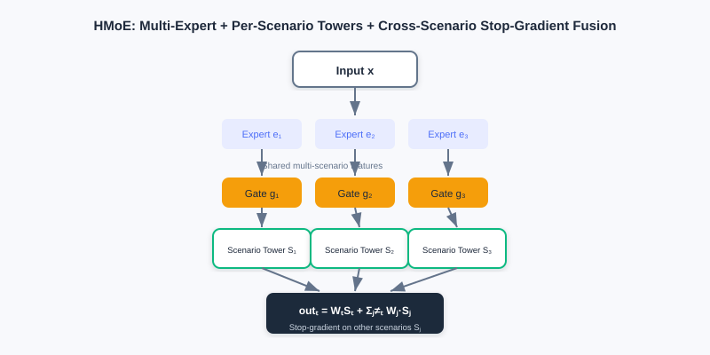
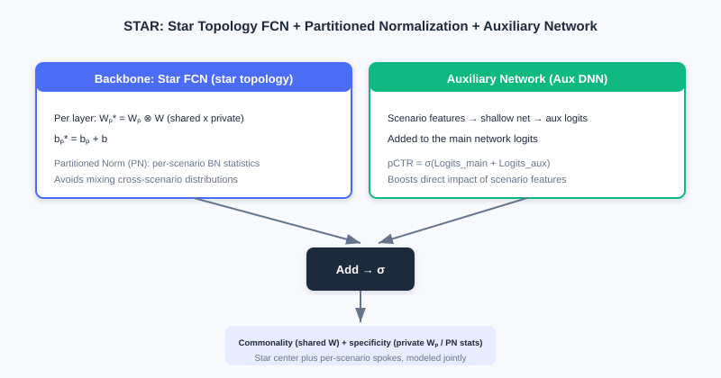
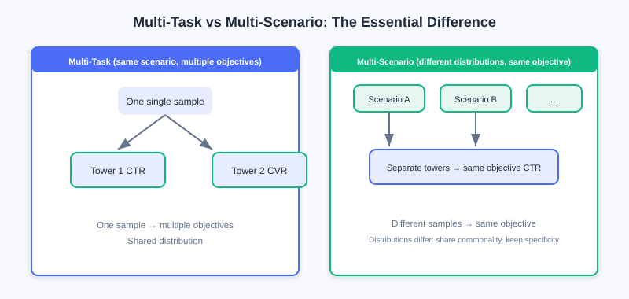
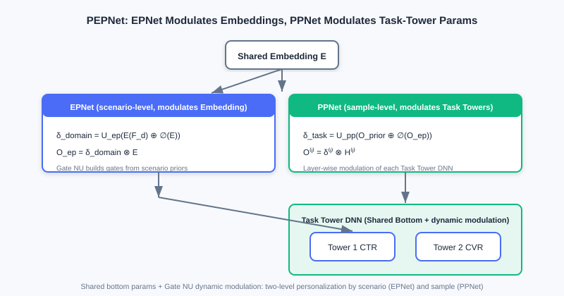

Multi-Scenario Modeling
📝 Before You Continue: Recommended: finish 3.4 Multi-Objective Optimization first. Multi-scenario and multi-task modeling look alike but differ at heart — multi-task handles multiple objectives in one scenario, while multi-scenario handles one objective across different scenarios; both rest on the design philosophy of "sharing + differentiation."
3.4 solved the multi-task problem of "predicting multiple objectives for the same sample." But industrial recommendation often faces multiple scenarios: one app may have home-feed recommendations, search result pages, and "guess you like" below the shopping cart — these scenarios have different data distributions yet must predict the same objective (e.g., CTR). This is multi-scenario modeling.
Training an independent model per scenario ignores cross-scenario commonality, leaves small scenarios data-starved and poorly performing, and multiplies resource costs; mixing all samples into one model ignores scenario differences and hurts accuracy. In this chapter we go from "multi-tower structures" (HMoE, STAR) to "dynamic-weight modeling" (PEPNet, APG, M2M), and see how to balance scenario commonality against scenario specificity.
After reading this chapter, you will be able to:
- Distinguish the essential difference between multi-task (multiple objectives in one scenario) and multi-scenario (one objective across different scenarios)
- Explain how HMoE uses multi-experts + multi-scenario towers + cross-scenario fusion (with stop-gradient) to model commonality
- Explain how STAR uses "star-topology FCN + partitioned normalization + an auxiliary network" to model shared and private parameters together
- Describe how PEPNet's EPNet/PPNet use dynamic gating (Gate NU) to modulate shared parameters
- Work through 4 leveled practice problems comparing the two routes of multi-scenario structures: "physical isolation" vs "dynamic modulation"
3.5.0 Motivation: Multi-Task ≠ Multi-Scenario
First, clear up a common confusion:
- Multi-task learning: same sample, same scenario, predicting multiple different objectives (e.g., one sample gets both CTR and CVR).
- Multi-scenario modeling: different scenarios, different distributions, predicting the same objective (e.g., each scenario predicts its own CTR).
The former is "multiple objectives for one sample"; the latter is "the same objective for different samples." With independent per-scenario models, commonality is ignored (small scenarios suffer, resources explode); with one model trained on mixed samples, differences are ignored (accuracy drops).
💡 Key Insight: The core tension of multi-scenario modeling is — how to share bottom-layer parameters (capturing commonality) while letting the model perceive scenario differences (capturing specificity). This chapter has two routes: ① multi-tower structures (physically isolating some parameters); ② dynamic weights (shared parameters + scenario/sample modulation).
🧠 Mental Model: Chain Stores vs Central Kitchen
Think of multiple scenarios as a company's multiple stores. ① The multi-tower structure is like "each store has its own kitchen (scenario tower) but shares semi-finished products from a central kitchen (shared experts)." ② Dynamic weights are like "all stores use the same central kitchen, but each has a 'flavor adjuster' (Gate NU) that fine-tunes the same dishes to local tastes." The former separates kitchens; the latter adjusts flavors.
3.5.1 Multi-Tower Structures: HMoE and STAR
HMoE (Hierarchical Mixture-of-Experts) borrows from MMoE: the bottom has multiple experts extracting features shared across scenarios, and the top consists of multiple scenario towers (rather than task towers). For scenario , the bottom fuses experts through a gate to get , and the final score fuses the outputs of multiple scenarios:
The key: when fusing other scenarios' scores, stop-gradient blocks their gradient backpropagation — preventing scenario 's samples from directly modifying scenario 's parameters and preserving scenario awareness. Scenario thus uses its own tower while borrowing other scenarios' scores as reference, without mutual pollution.

HMoE's bottom experts extract cross-scenario shared features, and each scenario has a dedicated tower on top; when fusing other scenarios' scores, stop-gradient blocks gradients — borrowing commonality without mutual pollution.
STAR (Star Topology Adaptive Recommender) uses a star topology to model shared and private parameters together. Its STAR FCN fuses each scenario's layer parameters as an element-wise product of "shared + private":
where are the scenario-private and globally shared parameters. STAR has two more innovations: Partitioned Normalization (PN) — computing Batch Norm statistics (mean/variance) per scenario (avoiding cross-scenario statistical confusion); and an auxiliary network — feeding scenario features through a shallow network to get auxiliary logits added to the main trunk: .

STAR's star FCN fuses "shared center × scenario-private" as an element-wise product, plus partitioned normalization (per-scenario statistics) and an auxiliary network — distinguishing scenarios at both the parameter and normalization levels.

Left: multi-task — same sample, multiple objective towers. Right: multi-scenario — samples from different scenarios, same objective tower; the challenge is sharing commonality while preserving differences.
Analysis: Multi-tower structures (HMoE/STAR) preserve scenario specificity with "physically isolated partial parameters" — intuitive and interpretable. HMoE's stop-gradient prevents scenario pollution; STAR's star FCN + PN separate scenarios at both the parameter and normalization levels. The cost: parameters grow with the number of scenarios (one tower / private parameters per scenario).
3.5.2 Dynamic-Weight Modeling: PEPNet
Multi-tower keeps specificity by "separating kitchens," but shares parameters poorly. PEPNet (Parameter and Embedding Personalized Network) flips the approach: the core network parameters are shared across scenarios, but their behavior is "modulated" through dynamically generated weights that are highly scenario/sample-specific — equivalent to injecting context into the shared network.
The core of PEPNet is the lightweight gating unit Gate NU (inspired by LHUC from speech recognition), which generates dynamic scaling weights with a two-layer network:
The output is dimension-aligned with the target parameters and modulates them via element-wise multiplication . PEPNet uses two modules for layered personalization:
- EPNet (scenario-aware Embedding personalization): feeds scenario priors through Gate NU to generate the gate , then multiplies element-wise with the shared embedding to get scenario-personalized embeddings . Note the stop-gradient applied to the shared embedding, leaving bottom-level learning undisturbed.
- PPNet (user-aware parameter personalization): takes user/content/author ID priors + EPNet's scenario embedding as input, generates per-layer, per-task-tower gates , and modulates every layer's output of the task-tower DNN: . This is sample-level (not task-level) personalization, easing the multi-task seesaw.

Gate NU generates dynamic scaling weights from scenario/user priors; EPNet modulates the shared embedding (scenario personalization), PPNet modulates each task tower's DNN (sample personalization), while the bottom stays shared.
3.5.3 Dynamic Parameter Generation: APG and M2M
APG (Adaptive Parameter Generation) goes further: it directly generates the parameters for a given sample from that sample. The sample-aware input is reshaped by an MLP into a parameter matrix , and the prediction is . To control cost, APG uses low-rank factorization: , where the private factor is generated from the sample and the shared factors are fixed; the forward pass uses the factored computation to reduce complexity. The shared capture commonality, the private captures specificity — balancing capacity and efficiency.
M2M (meta-learning for multi-scenario multi-task) uses a meta-learner (an MLP) to dynamically generate the task model's parameters from scenario/input features. The backbone contains expert representations , task representations , and a scenario representation ; the meta-learner unit turns the scenario representation into per-layer dynamic parameters applied to features (like an MLP injected with scenario information). It also applies meta-learner units in expert fusion (an Attention meta-network that introduces the scenario during fusion) and in the multi-task towers (Tower meta-networks in a residual style), achieving fine-grained scenario adaptation.
💡 Key Insight: The two routes of multi-scenario modeling converge — multi-tower structures preserve specificity with a "physically isolated parameter space" (divide and conquer); dynamic weights / parameter generation preserve specificity with "shared backbone + dynamic modulation" (injecting context). The latter is more parameter-efficient and flexible, but demands more from the design of the modulation / generation mechanism.
⚠️ Common Mistakes in 3.5
| # | Mistake | Example | Why It's Wrong | Fix |
|---|---|---|---|---|
| 1 | Treating multi-scenario as multi-task | "Multi-scenario is just multi-task with a new name" | Multi-scenario = different distributions, same objective; multi-task = same distribution, multiple objectives | First ask "do the sample distributions differ?" |
| 2 | Fusing HMoE without stop-gradient | "Just add cross-scenario scores directly, gradients flow too" | Scenario a's samples would modify scenario b's parameters, polluting awareness | Add stop-gradient to other scenarios' scores |
| 3 | Missing PN's motivation in STAR | "Global BN statistics are fine" | Mixed multi-scenario samples are not i.i.d. | Use partitioned normalization with per-scenario statistics |
| 4 | Confusing EPNet with PPNet | "Both modulate the task towers" | EPNet modulates embeddings (scenario-level); PPNet modulates towers (sample-level) | EPNet = scenario-level, PPNet = sample-level |
Chapter Summary
📌 Key Takeaways
| Concept | Key Points | Why It Matters |
|---|---|---|
| Multi-scenario vs multi-task | Different distributions, same objective vs same distribution, multiple objectives | Identify the problem type before modeling |
| HMoE multi-tower | Multi-experts + scenario towers + cross-scenario stop-gradient fusion | Shares commonality, preserves scenario awareness |
| STAR star topology | Shared ⊗ private parameters + partitioned normalization + auxiliary network | Separates scenarios at both parameter and normalization levels |
| PEPNet | Gate NU dynamic modulation: EPNet (Embeddings) + PPNet (towers) | Shared backbone + dynamic personalization |
| APG / M2M | Sample/scenario dynamic parameter generation (meta-learning) | Most flexible, parameter-efficient |
❓ FAQ
Q1: When to use multi-tower, and when dynamic weights?
A: Few scenarios with big differences and a need for strong interpretability → multi-tower (HMoE/STAR); many scenarios, parameter-efficiency sensitivity, and fine-grained sample personalization → dynamic weights (PEPNet/APG/M2M). The two can also be combined.
Q2: Why does STAR's star FCN use an element-wise product?
A: makes each scenario's final parameters "shared center × scenario increment" — inheriting commonality while carrying specificity; multiplication (rather than mere addition) lets the private parameters "amplify/suppress" the shared ones as modulation.
Q3: Why does PEPNet's EPNet apply stop-gradient to the shared embedding?
A: To prevent the scenario-personalization gate branch's backpropagated gradients from corrupting the bottom-level shared embedding's general learning — decoupling "commonality" from "scenario differences."
🔗 Connections to Later Chapters
- In 3.4 (Multi-Objective), the MMoE/PLE idea evolves in multi-scenario settings into HMoE's multi-experts + multi-towers; PEPNet's PPNet simultaneously eases the multi-task seesaw.
- Part 4 re-ranking optimizes list-level experience on top of ranking (multi-scenario, multi-objective scoring).
- The end-to-end architectures of generative recommendation (in the next volume) can be seen as a further unification of "multi-scenario / multi-task towers."
Practice Problems
Work through all problems in order — they get progressively harder. Each has a complete solution you can reveal after trying it yourself.
Problem 3.5.1 — Multi-Task or Multi-Scenario? 🟢 Easy
Decide whether each case is "multi-task" or "multi-scenario," and explain why:
- (a) The same home-feed recommendation stream predicts both click-through rate and conversion rate for one sample.
- (b) Two differently distributed traffic sources of the same app — "home feed" and "search results page" — each predicting click-through rate.
💡 Solution (click to reveal)
Approach: Ask "are the sample distributions the same, and are the objectives the same?"
- (a) Multi-task: same scenario (home feed), same distribution, predicting multiple different objectives (CTR, CVR).
- (b) Multi-scenario: different distributions (home vs search), different samples, predicting the same objective (CTR).
Key points:
- Multi-task = same distribution, multiple objectives; multi-scenario = different distributions, same objective.
- Both rely on "sharing + differentiation," but the differentiation targets "objectives" vs "distributions."
Problem 3.5.2 — HMoE's stop-gradient 🟢 Easy
HMoE applies stop-gradient when fusing other scenarios' scores. Briefly state: what goes wrong without stop-gradient?
💡 Solution (click to reveal)
Approach: Think from the angle of "scenario parameter pollution."
In HMoE's fusion formula, the other scenarios' carry stop-gradient to block gradient backpropagation. Without it: scenario 's samples participate in scenario 's score fusion during the forward pass, so during backprop gradients flow along the fusion path and modify scenario 's tower parameters — scenario 's representation gets disturbed by scenario 's samples, the model's scenario awareness degrades, and multi-scenario performance drops.
Key points:
- stop-gradient isolates cross-scenario gradients, preserving "each scenario affects only its own parameters."
- This is the key to HMoE borrowing other scenarios' information without mutual pollution.
Problem 3.5.3 — STAR's Innovations 🟡 Medium
Compared with "independently training one model per scenario," what sharing designs does STAR make to balance commonality and specificity? List at least two and explain their roles.
💡 Solution (click to reveal)
Approach: Recall STAR's three innovations.
- Star FCN: — each scenario's parameters = shared center × scenario-private, inheriting commonality while carrying specificity, avoiding fully independent models.
- Partitioned Normalization (PN): computes BN's mean/variance per scenario, avoiding the statistical confusion caused by non-i.i.d. mixed multi-scenario samples.
- Auxiliary network: scenario features pass through a shallow network to produce auxiliary logits added to the main trunk, strengthening the direct influence of scenario features on the output.
Key points:
- Commonality comes from shared / PN's shared parameters; specificity from / PN's per-scenario statistics.
- Saves parameters versus independent models, and small scenarios can borrow commonality.
Problem 3.5.4 — Small Scenarios and Star Sharing 🔴 Hard
STAR uses : each scenario's private parameters fused by element-wise product with the globally shared . If a scenario has very little data, its private parameters easily overfit. Using the star structure, explain why the shared center alleviates this problem, and describe PN's (partitioned normalization) additional role in this setting.
💡 Solution (click to reveal)
Approach: Look from two angles: "small private parameter count, constrained by sharing" and "normalization stability."
- The final parameters are : although the private overfits easily on few samples, it only performs "amplify/suppress" modulation of the shared center , and the main capability still comes from the data-rich shared . The private parameters are relatively small in dimension and multiplicatively constrained by the shared ones, so their overfitting influence is diluted — sharing acts as regularization.
- PN computes BN's mean/variance per scenario. If a small scenario were mixed into globally pooled batches, its statistics would be dominated by large scenarios and normalization would be unstable; PN lets the small scenario use its own statistics, training more stably and further easing representation shift under few samples.
Key points:
- Star topology = shared fallback + private fine-tuning, naturally resistant to small-scenario overfitting.
- PN adds distribution-level scenario isolation.
🏆 Challenge: Pick a Route and Defend It
A platform has 6 different scenarios (home feed / search / shopping cart / channel pages / push notifications / feed stream), all predicting CTR, with 3 scenarios having very little data. The team has limited resources and wants parameter efficiency without small scenarios collapsing. Choose the "multi-tower" or "dynamic weights" route and justify it (within 150 words), and name a concrete model you could build on if you choose dynamic weights.
💡 Hint
6 scenarios, parameter-sensitive, weak small scenarios → choose the dynamic weights route: shared backbone + dynamic modulation, parameter-efficient, with small scenarios borrowing shared commonality instead of collapsing. You could build on PEPNet (Gate NU modulating embeddings and towers) or APG (sample-wise dynamic parameter generation); multi-tower grows parameters linearly with scenario count at 6 scenarios, and small scenarios' independent towers easily underfit.